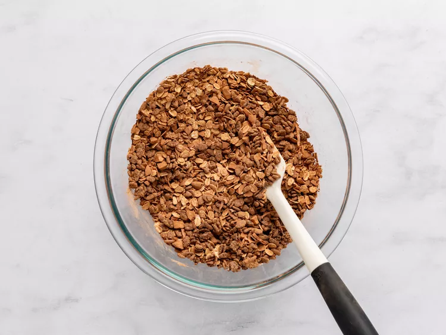
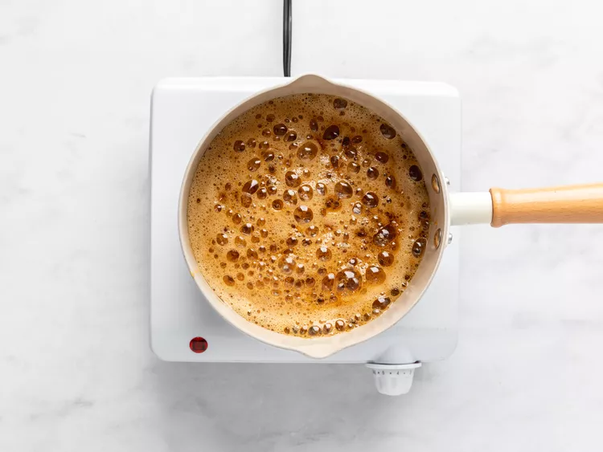
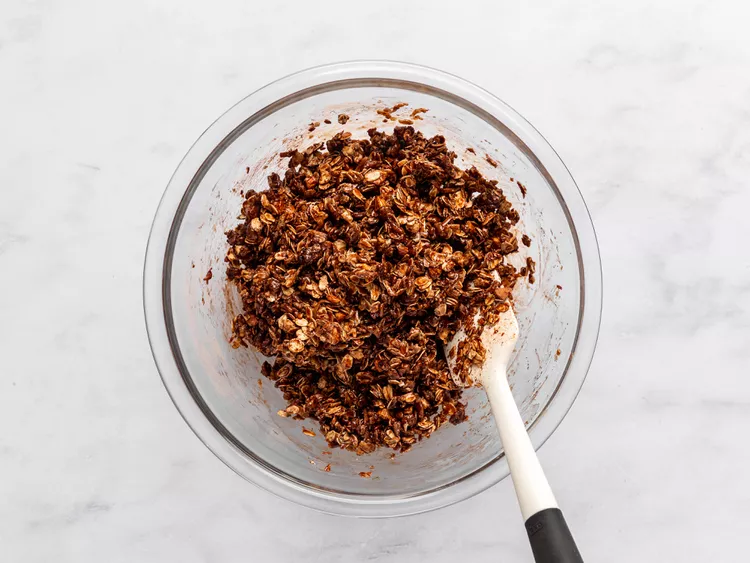
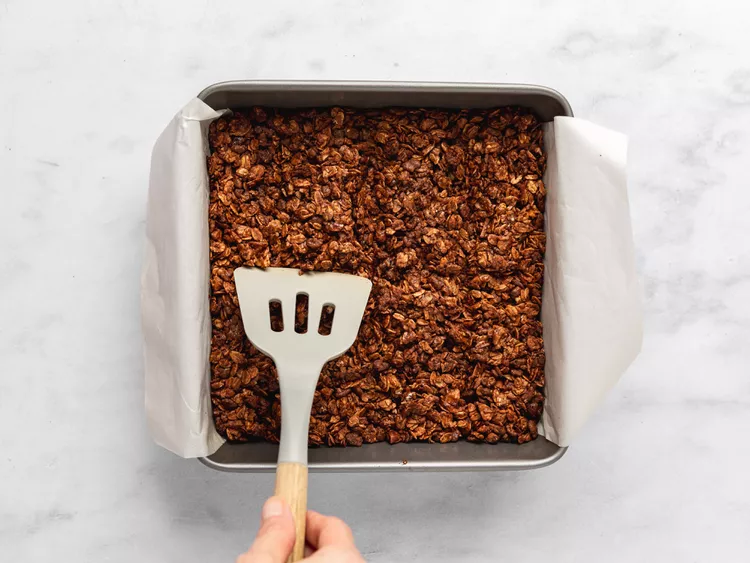
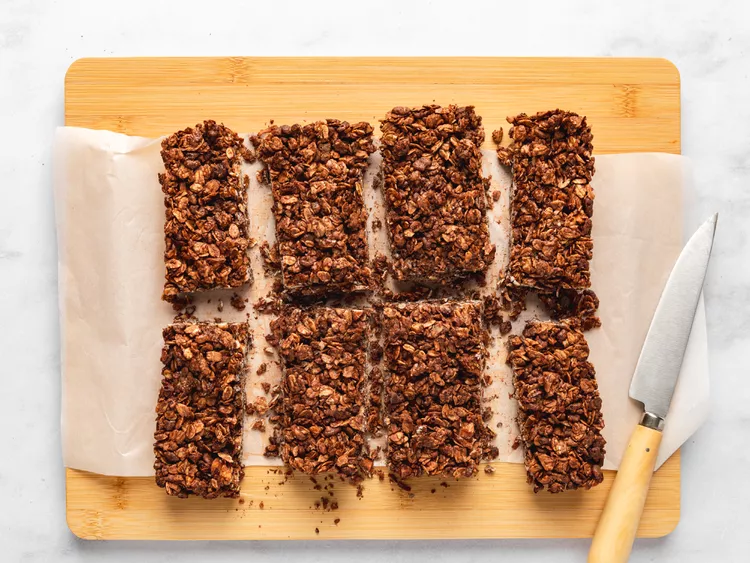

Make your own chewy energy/granola bars with a not-too-sweet chocolate flavor with hints of coconut and almond.
Chocolate Cereal Breakfast Bars - Better, Cheaper, and Way More Personal
This isn't really a specific recipe, but rather a simple method that allows you to create customized breakfast bars, energy bars, power bars, sports bars, or whatever you decide to call them.
Pretty much any ready-to-eat breakfast grain or cereal can work here, along with all you favorite nuts, seeds, and dried fruits. No matter what goes in yours, I really do hope you give these a try soon. Enjoy!
Gather all your ingredients. Preheat the oven to 350 degrees F (175 degrees C). Grease an 8x8 pan with butter and line with parchment paper.
Combine rolled oats, puffed brown rice cereal, almonds, coconut, cocoa powder, salt, and cayenne in a bowl.
Combine brown sugar, maple syrup, vegetable oil, and water in a small saucepan and bring to a simmer over medium-high heat. Stir, and let the mixture boil for 1 minute.
Pour sugar mixture over the dry ingredients in the bowl and mix thoroughly.
Transfer to the prepared pan, and smooth out the top, pressing lightly with a spatula.
Bake in the preheated oven for 25 minutes. While still hot, use a spatula to score the pan into 8 portions.
Let cool to room temperature before breaking into bars. You can also not score, and simply let cool, then cut with a knife.
Serve and enjoy!
Any and all ready-to-eat cereal grains, or packaged breakfast cereals can be used here along with any types of dried fruit, nuts, and/or seeds.